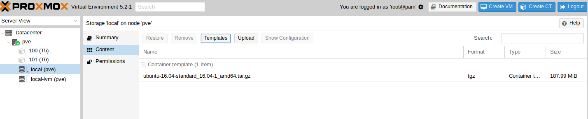
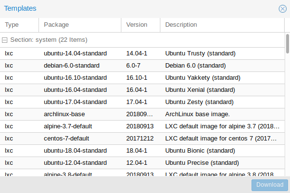

¿Que es proxmox?
Proxmox Virtual Environment es una solución completa de virtualización, que funciona sobre Debian GNU/Linux, permitiendo la creación y gestión de máquinas virtuales OpenVZ y KVM.
Proxmox no crea ningún sistema de virtualización (o paravirtualización) nuevo, sino que usa dos ya existentes (KVM y OpenVZ), y ofrece una interfaz común de gestión, que simplifica el trabajo y hace que no sea necesario conocer el interior de estos sistemas para poder trabajar con máquinas virtuales.
Está basado en Software Libre, es decir, que podemos ver y hacer lo que queramos con el código fuente. Proxmox es uno de los productos más completos para virtualización en entornos de servidor, capaz de hacerle sombra a opciones de pago como VMware.
Programas utilizados para la instalacion:
|
¿Como instalarlo?
Proxmox Virtual Environment es una solución completa de virtualización, que funciona sobre Debian GNU/Linux, permitiendo la creación y gestión de máquinas virtuales OpenVZ y KVM.
Proxmox no crea ningún sistema de virtualización (o paravirtualización) nuevo, sino que usa dos ya existentes (KVM y OpenVZ), y ofrece una interfaz común de gestión, que simplifica el trabajo y hace que no sea necesario conocer el interior de estos sistemas para poder trabajar con máquinas virtuales.
Está basado en Software Libre, es decir, que podemos ver y hacer lo que queramos con el código fuente. Proxmox es uno de los productos más completos para virtualización en entornos de servidor, capaz de hacerle sombra a opciones de pago como VMware.
Proxmox Virtual Environment es una solución completa de virtualización, que funciona sobre Debian GNU/Linux, permitiendo la creación y gestión de máquinas virtuales OpenVZ y KVM.
Proxmox no crea ningún sistema de virtualización (o paravirtualización) nuevo, sino que usa dos ya existentes (KVM y OpenVZ), y ofrece una interfaz común de gestión, que simplifica el trabajo y hace que no sea necesario conocer el interior de estos sistemas para poder trabajar con máquinas virtuales.
Está basado en Software Libre, es decir, que podemos ver y hacer lo que queramos con el código fuente. Proxmox es uno de los productos más completos para virtualización en entornos de servidor, capaz de hacerle sombra a opciones de pago como VMware.
¿Como configurar el servidor?
Una vez instalado proxmox si no tenemos la plantilla, la descargaremos.
Le damos click en "datacenter", luego selecionamos local(pve) luego nos saldra un pequeño menu y ahi le damos click en content le damos a Templates
Selecionamos el que queramos, y lo descargaremos
Una vez descargado la plantilla, crearemos nuestro contenedor le damos click en "create CT"